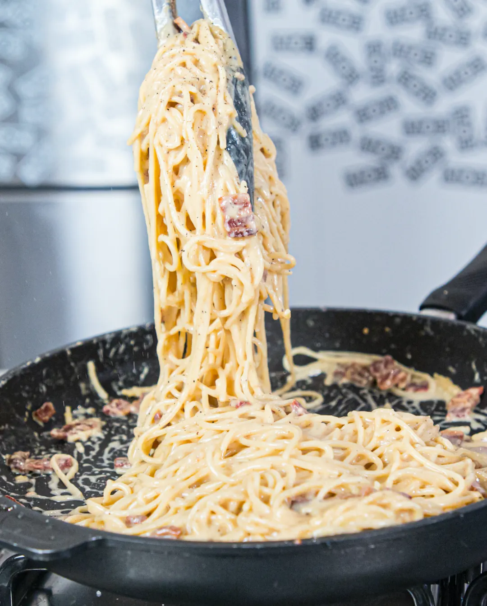

Spaghetti Carbonara

Description
MOB's take on a classic. Absolutely no cream anywhere near this dish. Pepper, smoked bacon, egg yolk, parmesan &
pasta water. Stuff dreams are made of.
Ingredients
- 6 Egg yolks
- 300g Streaky Smoked Bacon
- 75g Pecorino
- 75g Parmesan
- 500g Spaghetti
- 2 Cloves of Garlic
- Salt
- Pepper
Steps
- Take a bowl, and grate in your Parmesan + Pecorino (set a pinch aside for sprinkling at the end).
- Then add 6 egg yolks, and a very, very generous amount of black pepper, 4 or 5 pinches of it. A good
carbonara is meant to be peppery - hence the name, CARBONara. Whisk everything together and set aside.
- Chop your smoked bacon into little bits, and add to a frying pan.
- As they begin to brown, add your spaghetti to a pan of boiling water. Salt the boiling water - pasta water
is meant to be almost as salty as the sea!
- Once the bacon is crisp, add 2 cloves of sliced garlic. Allow these to soften - if the garlic or bacon looks
like it is catching on a pan, add small spoons of the starchy pasta water.
- When the pasta is 1 minute before being ready - so still quite al dente, take out 5 or 6 ladles of the pasta
water and pour it into a bowl. Set this bowl aside.
- Drain the pasta, and then pour the pasta into the pan with the bacon and the garlic. Add a couple ladles of
the pasta water, and cook everything together over a medium heat. Once the water has evaporated and the
pasta is nice and silky, take off the heat.
- Allow to cool down for 1 minute, and then add the egg and parmesan mixture, and another ladle of the water
and mix it all together.
- If it looks too thick, add a bit more water. It should be silky smooth! Serve with a sprinkle of parmesan
and twist or two more of black pepper! Enjoy!